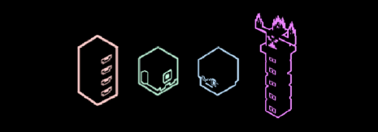

Se trata de uma addon Bedrock focada em recriar todo o jogo do ZERO, implementando vários novos recursos e um mundo alternativo que se passa em uma era steampunk de um universo divergente do vanilla. Dentre infinitos outros universos.
As histórias contadas foram criadas com embasemento de teorias muito específicas + ideias da minha cachola. O mundo de Hycraft é lotado de vida racional, como hominídeos, amagonianos, etc, que vivem em uma sociedade meritocrata.